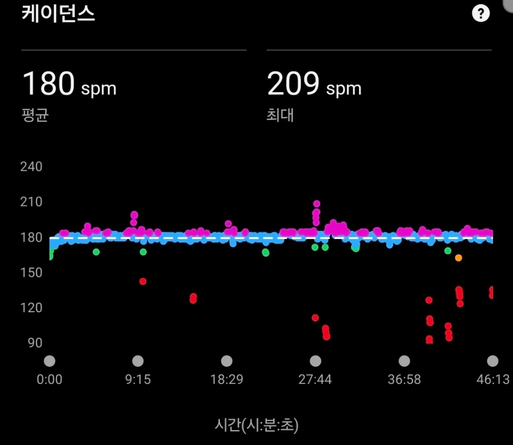

달리기 발걸음 수 180의 진실: 키 큰 사람도 무조건 180을 맞출까?
- '1분에 180걸음'은 모두가 무조건 지켜야 할 법칙이 아니라 올림픽 선수들의 평균에서 나온 기준입니다.
- 키(다리 길이)와 달리는 속도에 따라 적당한 걸음 수는 다르며, 키 180cm가 넘는 분은 168~174회도 아주 자연스럽습니다.
- 다만 지금 내 걸음 수에서 5%만 올려도 무릎에 가는 충격이 20% 줄어들므로 부상 예방에 큰 도움이 됩니다.
1. "180을 못 채우면 잘못 뛰고 있는 건가요?"
스마트워치를 차고 뛰다 보면 케이던스(1분 동안 발을 디디는 횟수)라는 숫자를 보게 됩니다. 주변이나 인터넷에서 "무조건 180 이상으로 뛰어야 한다", "160대는 초보라서 다친다"는 말을 자주 듣다 보니 많은 분들이 숫자에 집착하게 됩니다.
이 때문에 키가 180cm가 넘는 분들도 보폭을 억지로 줄여 종종걸음을 치며 180을 맞추려다 오히려 숨이 차고 어색한 자세로 다치곤 합니다. 과연 모든 사람이 180을 맞춰야 할까요?
아래 그림은 실제로 밖에서 46분 동안 달렸을 때 시계에 찍힌 걸음 수 그래프입니다. 달리는 내내 평균 180걸음을 큰 흔들림 없이 유지했습니다. 하지만 발을 억지로 바쁘게 굴린 것이 아니라, 발을 땅에 오래 두지 않고 엉덩이 아래로 가볍게 당겨 올리는 리듬이 몸에 익자 자연스럽게 나온 숫자입니다.

2. 180이라는 숫자가 나온 진짜 이유
이 이야기는 유명한 달리기 코치 잭 대니얼스 박사의 관찰에서 시작되었습니다. 그는 1984년 LA 올림픽에서 결승전을 뛰는 선수 46명의 발걸음을 직접 세어 보았습니다.
그 결과 45명이 1분에 180번 이상 발을 구르고 있었습니다. 박사가 "잘 뛰는 선수들은 발걸음이 빠르다"고 책에 소개하자, 이것이 어느새 "누구나 180을 뛰어야 한다"는 말로 퍼진 것입니다.
하지만 그때 올림픽 선수들은 1km를 3분 안팎으로 달리는 엄청난 속도로 뛰고 있었습니다. 우리가 동네에서 1km를 6분대로 천천히 조깅할 때와 올림픽 결승전 속도의 걸음 수가 똑같을 수는 없습니다.
3. 내 키에 맞는 자연스러운 발걸음 수
그네의 줄이 길수록 천천히 흔들리는 것처럼, 다리가 긴 사람일수록 한 걸음이 길어 자연스럽게 걸음 수가 조금 적게 나옵니다.
| 내 키 | 편안한 조깅할 때 | 조금 빠르게 뛸 때 |
|---|---|---|
| 160cm 미만 | 174 ~ 180회 | 182 ~ 192회 |
| 160cm ~ 175cm | 168 ~ 176회 | 178 ~ 186회 |
| 180cm 이상 | 162 ~ 170회 | 172 ~ 180회 |
실제로 키가 183cm가 넘는 러너가 170대 초반의 걸음 수로도 마라톤을 아주 빠르게 완주하는 경우가 많습니다.
4. 그래도 걸음 수를 '딱 5%만' 올리면 좋은 이유
그렇다고 걸음 수를 전혀 신경 쓰지 않아도 되는 건 아닙니다. 스포츠 의학 연구에서 매우 흥미로운 결과가 나왔기 때문입니다.
러너들에게 억지로 180을 맞추게 하지 않고, 원래 내 걸음 수에서 딱 5%만 올렸을 때:
• 발이 땅에 부딪힐 때 무릎으로 오는 브레이크 충격 20% 감소
• 무릎 앞쪽 관절이 받는 부담 14% 감소
• 다리를 너무 멀리 뻗어 디디는 나쁜 습관이 자연스럽게 사라짐
지금 내 걸음 수가 158회 정도라면, 내일 당장 180으로 올리려 하지 마세요. 165회(약 5% 증가) 박자의 음악이나 메트로놈에 맞춰 2~3주만 연습해도 무릎이 훨씬 편안해지는 것을 느낄 수 있습니다.
내 실력에 맞는 달리기 속도가 궁금하신가요?
최근 달린 기록을 넣으면 부상 없이 뛸 수 있는 편안한 조깅 속도부터 빠른 연습 속도까지 바로 계산해 드립니다.
⚡ 내 맞춤 조깅 속도 확인하기⚡ 내 달리기 실력에 맞는 훈련 속도는?
최근 달린 기록을 넣으면 나에게 알맞은 조깅 속도와 빠른 달리기 속도를 바로 계산해 드립니다.
⚡ 내 맞춤 달리기 속도 계산기 바로가기 ›